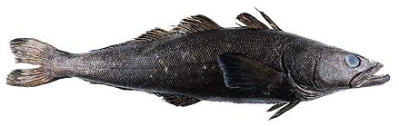

Patagonian Toothfish

[Chilean Seabass, Merluza Negra (spanish), Mero (japan) Dissostichus
eleginoides]
A large fish (up to 250 pounds) living at great depths in the southern oceans from Uruguay to the Antarctic Circle. It has very white flesh with a high fat content but rather little flavor. A single large fish can sell for $1000 in Japan. Though marketed as "Chilean Sea Bass" in the U.S. it is not a bass at all nor is it specific to Chile.
This fish is endangered by pirate fishing and it's slow rate of maturing. While there is some properly licensed commercial fishing, the pirate take is thought to be five times as large. It is not possible to tell legal from pirated fish so consuming this fish should be avoided. Photo by US Federal Government = public domain.
More on Varieties of Fish (large
page) .
|
Patagonian Tothfish flesh is white, very mild flavored (insipid) and tender. It is almost always sold as steaks because of the size of the fish. The company that originally marketed it found no takers because of its excessively mild flavor - until there was shortage of some other fish. In Japan, once the price got high enough to improve the flavor, it became all the rage and now they'll pay any price. Buying: If you really must have this fish, buy it from a legitimate source, such as Trader Joes, that certifies it comes from a sustainable harvest region. It's still not certain due to fraud in the fish business, but at least a try.. |